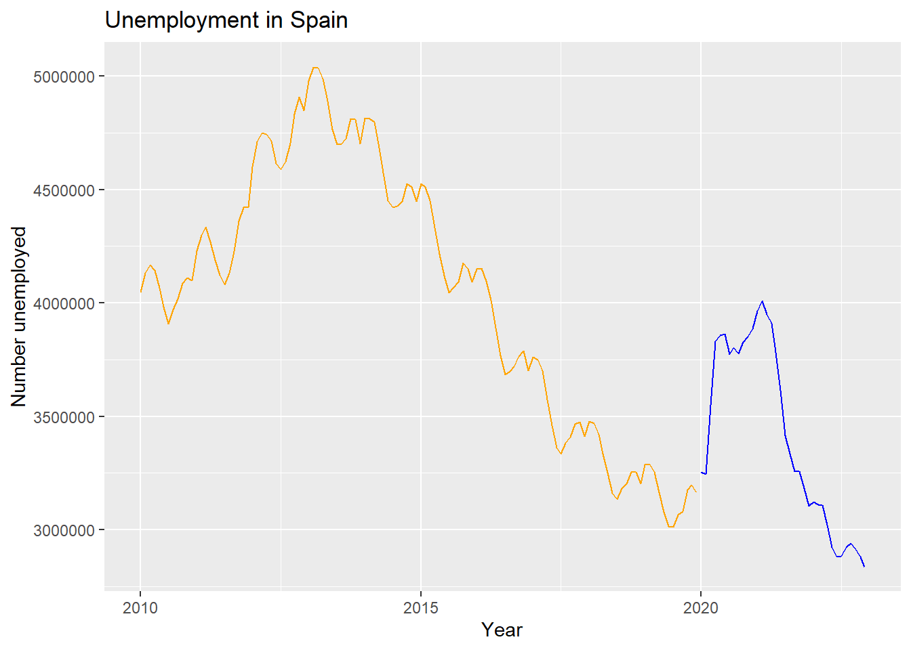
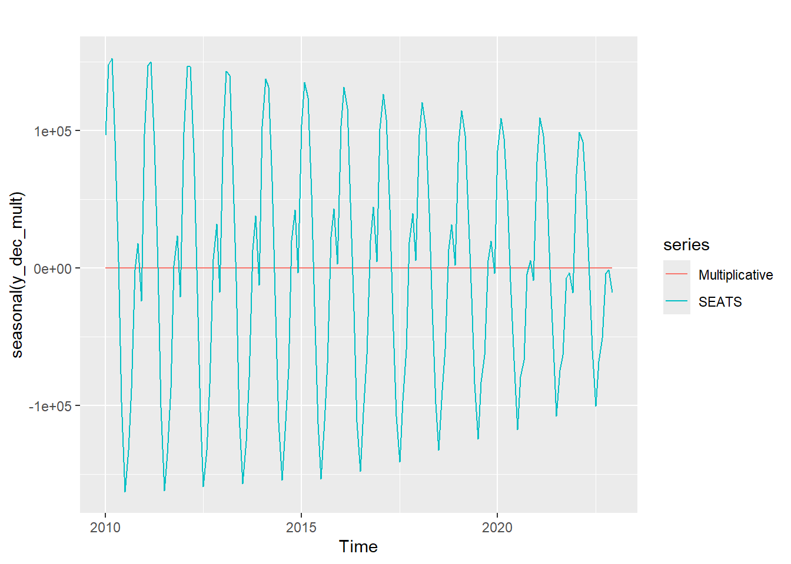

##############################################################################
############# Lab Practice 1: Decomposition Methods ################
##############################################################################2025_09_03 Decomposition, lecture notes
Carga de librerías
# Load libraries
library(fpp2)
library(tidyverse)
library(readxl)En clase comentaremos como instalar librerías de R.
Lectura de datos
En clase comentaremos **como elegir el directorio de trabajo*.
# Load dataset -------------------------------------------------------------------------------------------------------
fdata <- read.table("Unemployment.dat", sep = ",", header = TRUE)Ejercicio: prueba a ejecutar esta segunda versión:
fdata <- read.table("Unemployment.dat", sep = ",", header = TRUE)Otros formatos (e.g. Excel)
fdata2 <- read_excel("Unemployment.xlsx")Para visualizar un objeto en R podemos simplemente usar su nombre. ¡Pero con objetos grandes no es una buena idea!
# Visualize data
fdataEs mejor usar head y tail
head(fdata) DATE TOTAL
1 01/01/2010 4048493
2 01/02/2010 4130625
3 01/03/2010 4166613
4 01/04/2010 4142425
5 01/05/2010 4066202
6 01/06/2010 3982368tail(fdata, 10) DATE TOTAL
147 01/03/2022 3108763
148 01/04/2022 3022503
149 01/05/2022 2922991
150 01/06/2022 2880582
151 01/07/2022 2883812
152 01/08/2022 2924240
153 01/09/2022 2941919
154 01/10/2022 2914892
155 01/11/2022 2881380
156 01/12/2022 2837653Las funciones glimpse y str proporcionan información sobre la estructura de datos.
glimpse(fdata)Rows: 156
Columns: 2
$ DATE <chr> "01/01/2010", "01/02/2010", "01/03/2010", "01/04/2010", "01/05/2…
$ TOTAL <int> 4048493, 4130625, 4166613, 4142425, 4066202, 3982368, 3908578, 3…¿Qué tipo de objeto es fdata?
str(fdata)'data.frame': 156 obs. of 2 variables:
$ DATE : chr "01/01/2010" "01/02/2010" "01/03/2010" "01/04/2010" ...
$ TOTAL: int 4048493 4130625 4166613 4142425 4066202 3982368 3908578 3969661 4017763 4085976 ...Es un data.frame, una estructura tabular heterogénea básica en R. Para aprender un poco más puede usar el siguiente Tutorial sobre R (nivel básico):
Exploratory Data Analysis for Time Series
Frecuencia de la serie temporal
Esta es la pregunta más importante que debes hacerte al principio del trabajo con una serie temporal:
# What is the frequency of observation for this data.
# Is this data yearly? (or quarterly, monthly, weekly, daily,...)
# Check for missing dates
fdata$DATE <- as.Date(fdata$DATE, format = "%d/%m/%Y")Notas:
<-es la asignación en R (atajos de teclado en RStudio).$permite acceder por nombre a una columna de un data.frame
Siempre es conveniente asegurarse de ordenar la serie temporal por fecha
fdata <- fdata %>% arrange(DATE)
# same as: fdata <- arrange(fdata,DATE)El operador %>% es un pipe.
¿Qué ha cambiado con as.Date?
glimpse(fdata)Rows: 156
Columns: 2
$ DATE <date> 2010-01-01, 2010-02-01, 2010-03-01, 2010-04-01, 2010-05-01, 201…
$ TOTAL <int> 4048493, 4130625, 4166613, 4142425, 4066202, 3982368, 3908578, 3…Dos posibles formas de tener datos ausentes en series temporales
huecos temporales
Puede haber fechas que faltan en la serie. Cuidado: es fácil que pasen inadvertiddos.
# How do we know if there are time gaps in the data?
range(fdata$DATE)[1] "2010-01-01" "2022-12-01"min(fdata$DATE)[1] "2010-01-01"max(fdata$DATE)[1] "2022-12-01"# Therefore we can create a complete sequence of months with the same range and
# compare it to the dates in our data.
date_range <- seq.Date(min(fdata$DATE), max(fdata$DATE), by = "months")
head(date_range)[1] "2010-01-01" "2010-02-01" "2010-03-01" "2010-04-01" "2010-05-01"
[6] "2010-06-01"tail(date_range)[1] "2022-07-01" "2022-08-01" "2022-09-01" "2022-10-01" "2022-11-01"
[6] "2022-12-01"Sugerencia: prueba a cambiar by = "months" por by = "weeks" (y luego asegúrate de deshacer el cambio)
Pregunta: ¿qué tipo de objeto es date_range?
# Now we do the comparison
date_range[!date_range %in% fdata$DATE]Date of length 0Si el resultado es Date of length 0 es que no hay huecos temporales. Si los hay, aparecerán.
Ejercicio:
- Crea una copia de
Unemployment.daten la misma carpeta, llámalaUnemployment_gaps.dat - Elimina la tercera fecha de ese fichero usando un editor de texto.
- Ejecuta todo el código anterior cambiando de fichero. Indicación: usa el menú
Code/ Re-run Previous. - Observa el resultado del último comando. Debe ser
[1] "2010-03-01" - Deshaz los cambios y vuelve a ejecutar todo el código. Indicación: aprende a comentar y descomentar líneas de manera eficiente.
Curso relámpago de selección en R:
Vamos a usar la evaluación parcial de RStudio para entender el comando.
date_range[!date_range %in% fdata$DATE]Pero para eso necesitamos entender cómo se selecciona elementos de un vector en R (en este caso, el vector date_range).
# genero un vector de 15 números del 1 al 10 en orden aleatorio (pero reproducible)
set.seed(2025)
a <- sample(1:10, 15, replace = TRUE)
a [1] 4 10 1 7 10 1 4 7 5 7 5 1 9 6 8Selecciono los tres primeros
a[c(1, 2, 3)][1] 4 10 1# es lo mismo que
a[1:3][1] 4 10 1Selecciono posiciones no consecutivas
a[c(4, 2, 6)][1] 7 10 1Condicionales y vectores booleanos:
a < 6 [1] TRUE FALSE TRUE FALSE FALSE TRUE TRUE FALSE TRUE FALSE TRUE TRUE
[13] FALSE FALSE FALSEy uso esto como selector
a[a < 6][1] 4 1 1 4 5 5 1Pregunta: ¿qué hace la función which? Más en general, ¿cómo obtengo ayuda en R?
Datos ausentes clásicos
Es decir, los NA habituales en una variable no temporal.
sum(is.na(fdata$TOTAL))[1] 0Ejercicio: usa la evaluación parcial de nuevo para entender lo que hemos hecho aquí
Más adelante veremos en detalle cómo tratar el problema de los datos ausentes.
Time series ts object
- Lectura recomendada:
Hands-On Time Series Analysis with R de R. Krispin Krispin (2019) - Otra lectura sugerida (2017):
Time Series Analysis in R Part 1: The Time Series Object
Time Series Analysis in R Part 2: Time Series Transformations
# Convert to time series object
# start -> year
# frequency = 12 -> monthly data
# frequency = 4 -> quarterly data
y <- ts(fdata$TOTAL, start = c(2010,1), frequency = 12)¿Qué aspecto tiene y?
head(y, 20) Jan Feb Mar Apr May Jun Jul Aug Sep
2010 4048493 4130625 4166613 4142425 4066202 3982368 3908578 3969661 4017763
2011 4231003 4299263 4333669 4269360 4189659 4121801 4079742 4130927
Oct Nov Dec
2010 4085976 4110294 4100073
2011 Nota: las funciones head y tail funcionan bien con objetos ts y a menudo son la forma más sencilla de dividir una serie temporal (por ejemplo, para hacer un split entre train y test).
Time Series Graphics
El gráfico básico es un time plot. Lo podemos obtener con autoplot
#Plot time series:
autoplot(y) +
ggtitle("Unemployment in Spain") +
xlab("Year") + ylab("Number unemployed")o con una función más básica como plot.ts
# or:
plot.ts(y,
main="Unemployment in Spain",
xlab="Year",
ylab="Number unemployed")La función window para seleccionar en series temporales
La función window permite extraer una parte de la serie temporal. Podemos indicar comienzo y final de la selección, pero a menudo usaremos window para dividir la serie en algo como:
y_aes datos hasta 2019 inclusive,y_bes *datos desde 2020 inclusive.
Esto se puede hacer con window así:
# Select time series time frame
y_a <- window(y, end = c(2019, 12))
y_b <- window(y, start = c(2020,1))Comprobemos:
tail(y_a) Jul Aug Sep Oct Nov Dec
2019 3011433 3065804 3079711 3177659 3198184 3163605head(y_b) Jan Feb Mar Apr May Jun
2020 3253853 3246047 3548312 3831203 3857776 3862883Vamos a pintarlas juntas para visualizar esta división:
#Plot time series
autoplot(y_a, color="orange") +
autolayer(y_b, color = "blue") +
ggtitle("Unemployment in Spain") +
xlab("Year") + ylab("Number unemployed")
También se puede usar window con start y end a la vez.
# or:
y_c <- window(y, start = c(2015, 1), end = c(2017, 12))
y_c Jan Feb Mar Apr May Jun Jul Aug Sep
2015 4525691 4512153 4451939 4333016 4215031 4120304 4046276 4067955 4094042
2016 4150755 4152986 4094770 4011171 3891403 3767054 3683061 3697496 3720297
2017 3760231 3750876 3702317 3573036 3461128 3362811 3335924 3382324 3410182
Oct Nov Dec
2015 4176369 4149298 4093508
2016 3764982 3789823 3702974
2017 3467026 3474281 3412781Ejercicio:
- examina
y_c. ¿Puedes añadirla al gráfico anterior? - Opcional: ¿qué pasa si usas esta versión?
y_c <- window(y, start = c(2015, 1), end = c(2017, 12), frequency=4)
autoplot(y_a, color="orange") +
autolayer(y_b, color = "blue") +
autolayer(y_c, color = "red") +
ggtitle("Unemployment in Spain") +
xlab("Year") + ylab("Number unemployed")Decomposition methods
La función decompose permite obtener descomposiciones clásicas.
#################################################################################
# Decomposition methods
#################################################################################
## Classical additive decomposition
y_dec_add <- decompose(y, type="additive")Pregunta:
- ¿qué clase de objeto es
y_dec_add? - consulta la ayuda de
decomposepara ver cómo puedes extraer las componentes a partir dey_dec_add.
- Usa
headpara explorar el comienzo de la serie de tendencia. ¿Qué ocurre y por qué?
La descomposición puede representarse gráficamente con autoplot:
autoplot(y_dec_add) + xlab("Year") +
ggtitle("Classical additive decomposition")En clase veremos el significado de esos rectángulos grises. La descomposición multiplicativa es similar.
## Classical Multiplicative decomposition
y_dec_mult <- decompose(y, type="multiplicative")
autoplot(y_dec_mult) + xlab("Year") +
ggtitle("Classical multiplicative decomposition")Para obtener otro tipo de descomposiciones debemos cargar librerías adicionales. Por ejemplo, seas de la librería seasonal
## SEATS
library(seasonal)
Attaching package: 'seasonal'The following object is masked from 'package:tibble':
viewy_dec_seas <- seas(y)De nuevo con autoplot podemos visualizar esta descomposición.
autoplot(y_dec_seas) + xlab("Year") +
ggtitle("SEATS decomposition")El resto del código compara las distintas descomposiciones gráficamente.
# Use seasonal(), trendcycle() and remainder() functions to extract the individual components.
# Use seasadj() to compute the seasonally adjusted time series.
#Compare seasonal components
autoplot(seasonal(y_dec_mult), series = "Multiplicative") +
forecast::autolayer(seasonal(y_dec_seas), series = "SEATS")
#Compare seasonal adjustment components (i.e. subtracting the seasonal component from the raw series)
autoplot(seasadj(y_dec_add), series = "Additive") +
forecast::autolayer(seasadj(y_dec_mult), series = "Multiplicative") +
forecast::autolayer(seasadj(y_dec_seas),series = "SEATS")References
Hyndman, R. J., & Athanasopoulos, G. (2021). Forecasting: Principles and practice. OTexts. Retrieved from https://otexts.com/fpp3/
Krispin, R. (2019). Hands-on time series analysis with r: Perform time series analysis and forecasting using r. Packt Publishing Ltd. Retrieved from https://github.com/PacktPublishing/Hands-On-Time-Series-Analysis-with-R